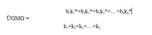
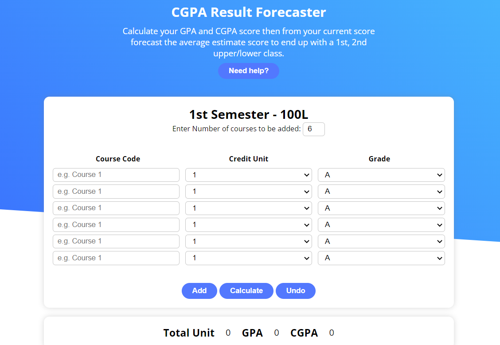

ÜOMG necə hesablanır?
Tələbələrin tədris fəaliyyətini fəallaşdırmaq, onlar üçün özünənəzarət mexanizmini yaratmaq və tədrisdə əldə olunmuş nailiyyətlərini qiymətləndirmək məqsədilə ümumi orta müvəffəqiyyət göstəricisi (bundan sonra – ÜOMG) tətbiq edilir. Ümumi orta müvəffəqiyyət göstəricisi fənlər üzrə toplanan balların həmin fənnə görə qazanılan kreditlərə hasilləri cəmlərinin tədris planında nəzərdə tutulan müvafiq kreditlərin cəminə olan nisbəti kimi müəyyənləşdirilir:
b1,b2,…,bn – tələbənin fənlər üzrə yığdığı ballar
k1,k2,…,kn – fənlərə tədris planında nəzərdə tutulan müvafiq kreditlər
k1*, k2*,…, k3* – fənlər üzrə qazanılmış kreditlər (əgər tələbə imtahandan müvəffəq qiymət almazsa o, krediti qazanmamış hesab edilir və bu əmsal 0 sıfr olur)
ÜOMG semeslilər üzrə artan istiqamətdə hesablanır (bir semesliin, iki semesliin, üç semesliin və s.)
Tələbələrin siyahısı
- Sənan Abdullayev
- Ruslan Ağakişiyev
- Osman Bəşirov
- Nail Cəbiyev
- Suqra Həsənova
- Nəriman Kərimov
- Fərid Həxiyev
- Nigar Mahmudova
- Amil Mansurov
- Asif Mustafayev
- Toğrul Məmmədov
- Marat Məmmədov
- Əbülhəsən Zeynalov
- Məmməd Yəhyayev
- Valeh Qocayev
- Nurlan İsazadə
- Arifə Əfəndiyeva
- Xuraman Tağızadə
- Sahilə Sadıqova
- Xəyal Rəsulov
- Əli Nəcəfov
- Nuranə Hüseynova
- Murad Əliyev
- Perviz Yunisli
- Orxan Suleymanov
| № | Fənlərin adı | kreditin sayı |
| I semestr | ||
| 1 | Xarici dil -1 | 5 |
| 2 | Riyaziyyat-1 | 6 |
| 3 | Fizika | 6 |
| 4 | İnformasiya texnologiyalarının əsasları | 6 |
| 5 | Proqramlaşdırmanın əsasları-1 | 7 |
| II semestr | ||
| 6 | Azərbaycan tarixi | 6 |
| 7 | Xarici dil-2 | 5 |
| 8 | Azərbaycan dili və nitq mədəniyyəti | 3 |
| 9 | Riyaziyyat -2 | 5 |
| 10 | Proqramlaşdırmanın əsasları-2 | 5 |
| 11 | Kompüterlərin arxitekturası | 6 |
| III semestr | ||
| 12 | Riyaziyyat-3 | 6 |
| 13 | Əməliyyat sistemləri | 6 |
| 14 | Verilənlərin strukturu və alqoritmlər | 6 |
| 15 | İnformasiya texnologiyalarının riyazi elementləri | 6 |
| 16 | Sistem mühəndisliyi | 6 |
| IV semestr | ||
| 17 | Fəlsəfə | 4 |
| 18 | Elektronikanın əsasları | 4 |
| 19 | Verilənlər bazasının əsasları | 7 |
| 20 | İnformasiya təhlükəsizliyi texnologiyaları | 5 |
| 21 | Sistem proqramlaşdırma | 5 |
| 22 | Qərar qəbuletmənin əsasları | 5 |
| V semestr | ||
| 23 | Obyektyönlü proqramlaşdırma | 7 |
| 24 | İnformasiya sistemləri | 6 |
| 25 | Kompüter şəbəkələrinə giriş | 6 |
| 26 | Mülki müdafiə | 3 |
| 27 | Ümumi təyinatlı tətbiqi proqram paketləri | 4 |
| 28 | Kommunikasiya vasitələri | 4 |
| VI semestr | ||
| 29 | İnsan maşın interfeysi | 6 |
| 30 | Menecmentin əasları | 5 |
| 31 | Hesablama təcrübələri | 6 |
| 32 | Həyat fəaliyyətinin təhlükəsizliyi | 5 |
| 33 | Korporativ informasiya sistemləri | 4 |
| 34 | İnformasiya sistemlərinin layihələndirilməsi | 4 |
| VII semestr | ||
| 35 | Azərbaycan Respublikasının konstitusiyası və hüququn əsasları | 2 |
| 36 | Multimediya texnologiyaları | 7 |
| 37 | İntellektual texnologiyalar | 7 |
| 38 | Rəqəmsal sistemlər | 6 |
| 39 | Coğrafi və ekoloji informasiya sistemləri | 4 |
| 40 | Verilənlərin analitik emalı sistemləri | 4 |
| 41 | Texniki xarici dil | 2 |
| VIII semestr | ||
| 42 | Təcrübə | 21 |
| 43 | Yekun dövlət attestasiyası | 9 |
Ümumi ortalama göstəricisinin hesablanması üçün yaradılmış sistemə keçid : Link 
| Tələbələr | I kurs | II kurs | III kurs | IV kurs | Ümumi |
|---|---|---|---|---|---|
| Sənan Abdullayev | 84.8 | 82.2 | 85.3 | 88.1 | |
| Ruslan Ağakişiyev | 91.9 | 95.2 | 87.1 | 91.2 | |
| Osman Bəşirov | 85.5 | 96.7 | 91.4 | 84.3 | |
| Nail Cəbiyev | 71.8 | 75.2 | 77.9 | 84.4 | |
| Suqra Həsənova | 70.2 | 82.5 | 87.8 | 79.5 | |
| Nəriman Kərimov | 65 | 54.2 | 68.9 | 79 | |
| Fərid Həxiyev | 83 | 87.2 | 90.9 | 88.5 | |
| Nigar Mahmudova | 94.8 | 88.4 | 96.8 | 91.2 | |
| Amil Mansurov | 80.6 | 78.4 | 94.9 | 79.3 | |
| Asif Mustafayev | 88.1 | 84.5 | 79 | 81.9 | |
| Toğrul Məmmədov | 61.2 | 59.9 | 70.1 | 69 | |
| Marat Məmmədov | 59.2 | 58.6 | 68 | 60 | |
| Əbülhəsən Zeynalov | 72 | 75.2 | 74 | 74 | |
| Məmməd Yəhyayev | 92.5 | 89.9 | 90.6 | 82.8 | |
| Valeh Qocayev | 77.5 | 77.7 | 72.9 | 71 | |
| Nurlan İsazadə | 68.3 | 66.5 | 58.5 | 71.5 | |
| Arifə Əfəndiyeva | 73.9 | 77.7 | 88.8 | 70.5 | |
| Xuraman Tağızadə | 88 | 90.5 | 91.2 | 84.2 | |
| Sahilə Sadıqova | 91.4 | 90.8 | 95 | 88.7 | |
| Xəyal Rəsulov | 74.5 | 74.2 | 81.3 | 76.5 | |
| Əli Nəcəfov | 79.9 | 77.5 | 81.5 | 77.1 | |
| Nuranə Hüseynova | 84.9 | 95 | 92.3 | 90 | |
| Murad Əliyev | 71.8 | 70.2 | 69.9 | 78.2 | |
| Perviz Yunisli | 57.1 | 64.2 | 68 | 60.6 | |
| Orxan Suleymanov | 61.6 | 70.7 | 68.4 | 60.9 |